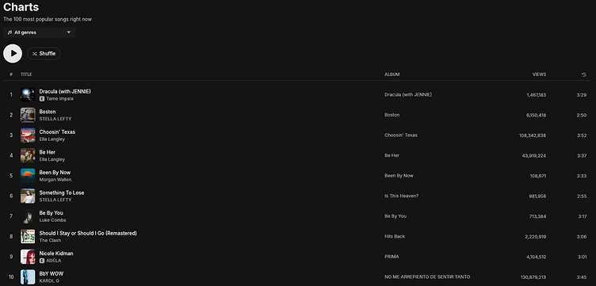
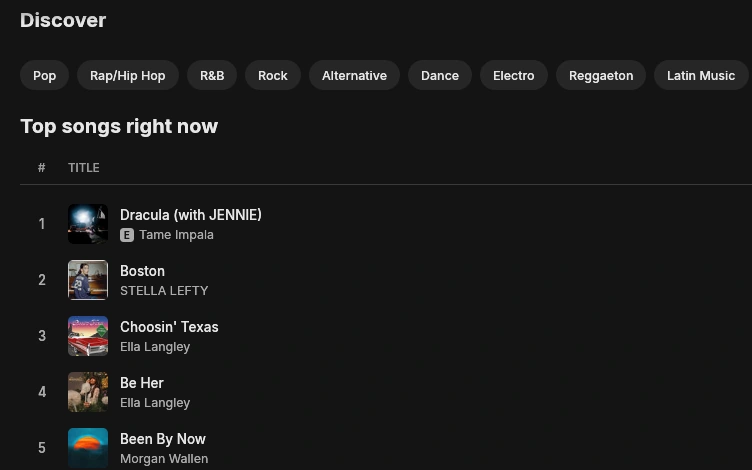
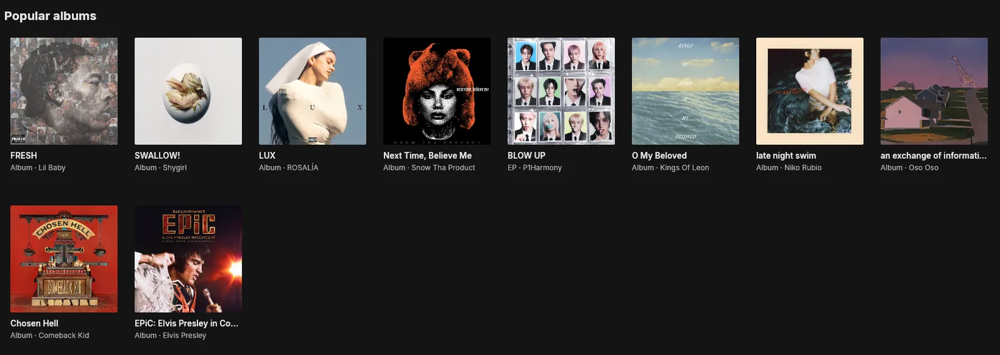
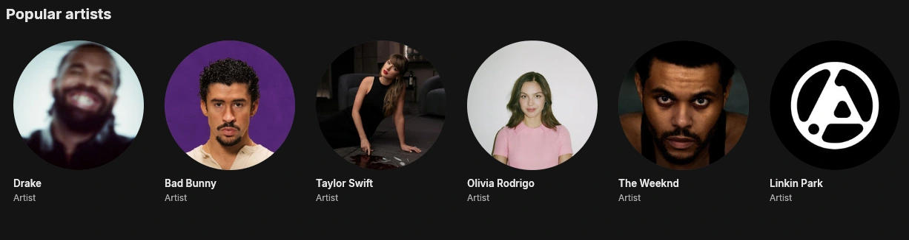
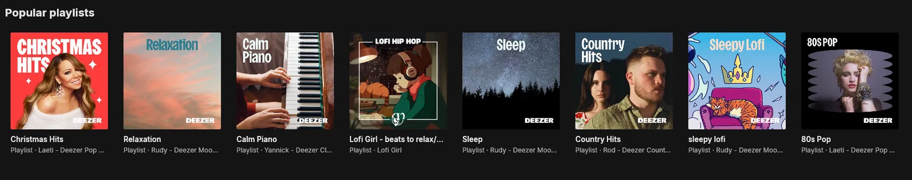

Bring your playlists
Paste a link from YouTube, Spotify or SoundCloud and Pulse rebuilds the playlist. Share yours with friends using a one-line code.
Pulse is a small, native music player written in Rust. Search any artist, press play, and hear the whole song. No account, no browser inside, nothing to sign up for.

Performance
While it plays, Pulse uses about 1% of your CPU and around 250 MB of memory. Other popular music apps can use up to 6% and more than 400 MB.
So it can stay open all day next to your games, your browser and your work, and you'll barely notice it's there.
Rough estimates from the developer's PC while playing music. Your numbers will depend on your PC.Discover
Search as you type, browse the charts in 27 genres, and open any artist or album. Songs play in full, and when your queue runs out, Pulse keeps going with music like it.

Browse
Cover art everywhere, round artist portraits, and playlists for every mood. Click a song's title to jump to its album, or right-click it to like it, share it, or see who made it.



And more
Everything you'd expect from a music player, and a few things you might not.
Paste a link from YouTube, Spotify or SoundCloud and Pulse rebuilds the playlist. Share yours with friends using a one-line code.
A six-band equalizer with presets, crossfade up to 10 seconds, gapless playback, automix and mono audio.
Your home page fills with what you play: quick shortcuts, Orbits built around your favorite artists, and the albums you keep coming back to.
Your own covers, search, genre filters, sorting, "date added", and Spotify-style selection with Ctrl and Shift.
Save songs for when you're offline, and play the MP3, FLAC, WAV, M4A and OGG files in your Music folder.
Full keyboard control, screen-reader support, high contrast mode, and text colors that meet WCAG AA contrast.
Themes
Five themes come built in, each with a dark and a light version. Some glow softly in the colors of the song that's playing. Have a look below, or make your own with a color file, a little CSS and a layout file. Spicetify color schemes work as they are, and Pulse reloads your theme the moment you save it.
Download the installer, run it, and press play. It installs just for you, adds Pulse to the Start menu, and uninstalls cleanly from Windows Settings.
Windows may show "Windows protected your PC" the first time, as it does for any new app without a paid signing certificate. Click More info, then Run anyway. The first song you play takes a moment longer while Pulse sets up YouTube playback (about 70 MB, once).